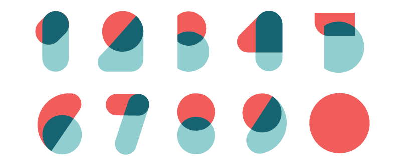

Numbers

Pay attention to the number 21 (vingt et un) in which the "one" is attached like "twenty and one" as opposed to 22 (vingt-deux), 23 (vingt-trois) and so forth.
| 1 |
un |
11 |
onze |
| 2 |
deux |
12 |
douze |
| 3 |
trois |
13 |
treize |
| 4 |
quatre |
14 |
quatorze |
| 5 |
cinq |
15 |
quinze |
| 6 |
six |
16 |
seize |
| 7 |
sept |
17 |
dix-sept |
| 8 |
huit |
18 |
dix-huit |
| 9 |
neuf |
19 |
dix-neuf |
| 10 |
dix |
20 |
vingt |
Things get difficult past number 70.
| 60 |
soixante |
62 |
soixante-dix |
| 70 |
soixante-dix |
72 |
soixante-douze |
Numbers switch from being base-ten (like in English) to being base-twenty. So instead of "seventy" being "seventy", it's called "sixty-ten". Seventy-two is called "sixty-twelve".